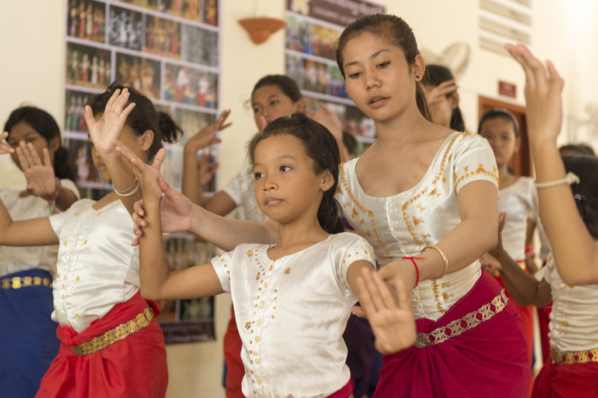
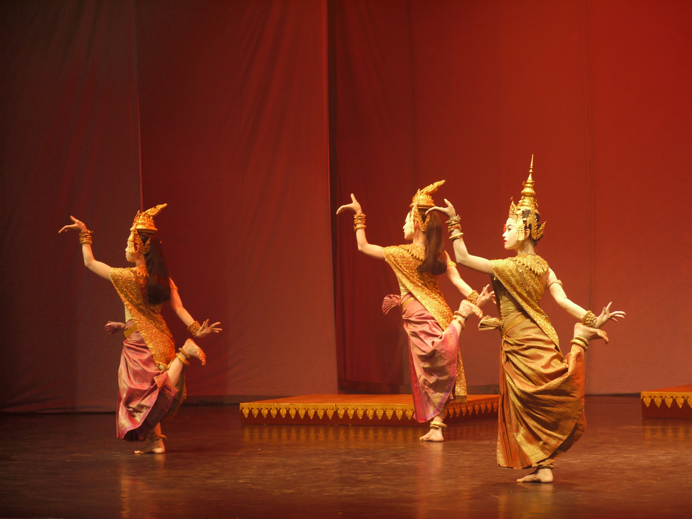
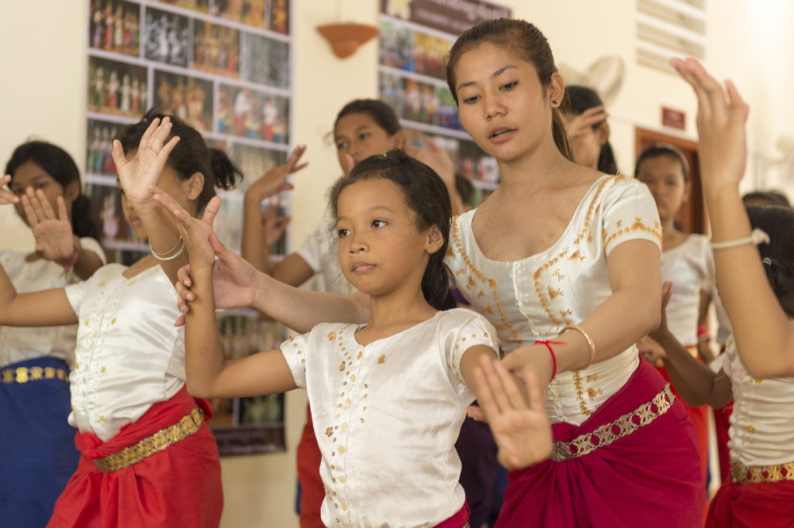
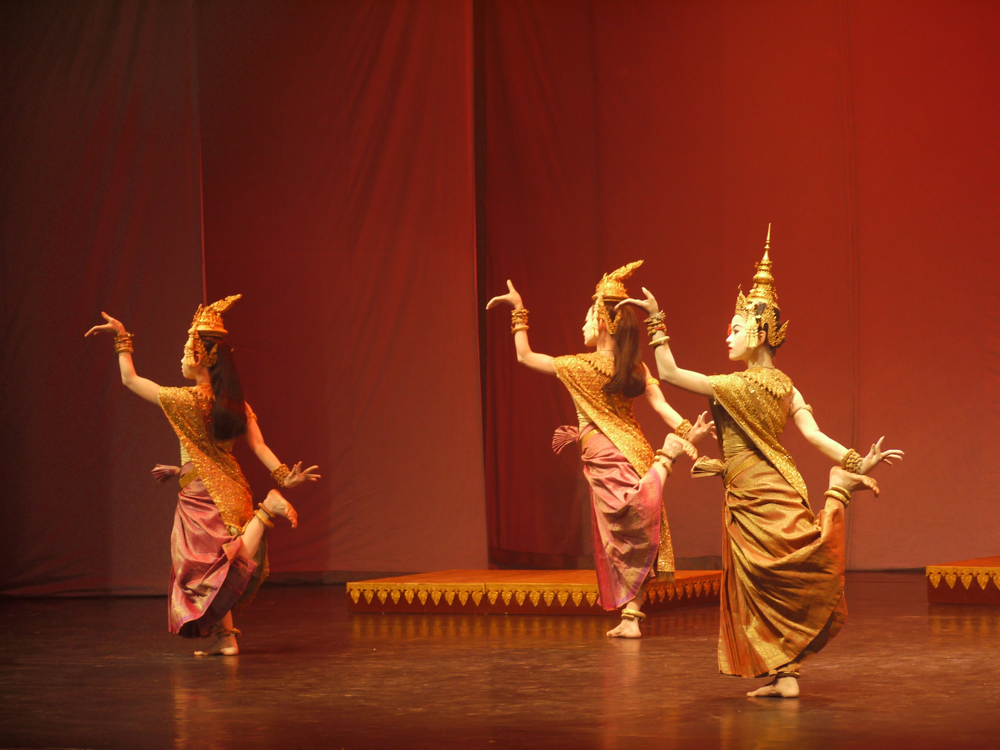

What is Cambodian Classical Dancing?
Cambodian classical dance is a centuries-old art form that embodies the grace, beauty, and cultural richness of the Khmer people. Traditionally, it was performed in the royal courts; these dances were initially intertwined with Cambodian spirituality and mythology. The dancers would wear intricate costumes and golden headdresses, using precise, elegant gestures and poses to convey stories from ancient Hindu and Buddhist legends. The dances serve not only as entertainment but also as a form of ritual and prayer, believed to bring prosperity and divine blessings to the land. It was even used to convey important life lessons, such as patience, humility and hardwork.
The significance of classical dance in Cambodian culture cannot be overstated. Today, it serves as a symbol of national identity and pride. During festivals and religious ceremonies, classical dance connects Cambodians to their ancestors and history, preserving traditions that have been passed down through generations. It also signifies good blessings and wishes to guests at special events.
Classical Dance in Historical Context
When the Pol Pot Regime took over the country, classical dance performances, education, and religion were strictly banned. An estimated 90% of Cambodian artists and arts perished in the 1970s. Since the early 1980’s, classical dance has become an egalitarian art form taught only by being passed down by generation. (Learn more about the Pol Pot Regime and Khmer Rouge in the “History” tab)
Training to Dance
The training of classical dancers is rigorous and begins at a young age, often within the Royal Palace or affiliated schools. Dancers undergo years of disciplined practice to perfect the highly stylized movements and develop the stamina required for performances. This dedication to preserving the authenticity and integrity of the art form is a testament to its cultural significance. Through classical dance, Cambodians express their reverence for tradition and their commitment to keeping their unique cultural identity alive.
Today
In contemporary Cambodia, classical dance has gained international recognition and is celebrated worldwide for its artistic excellence. Efforts to preserve and promote this cultural heritage have been supported by the Cambodian government and various organizations, ensuring that future generations can continue to experience and appreciate the beauty and significance of Cambodian classical dance.
More Resources
If you would like to learn more about Cambodian classical dances,check out the following resources!
"Cambodain Traditional Dances" from Cambodia Travel
"Brief History of Cambodian Dance" from Charya Burt Cambodian Dance
 


